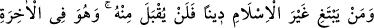
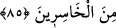

söyleyenler ise; “Biz bu peygamberlerin şu anda da nebî veya rasûl olduklarına
inanıyoruz” derler. Bu duruma dikkat edilmelidir.”
“Biz O’na teslim olanlarız.” Buradaki “islâm” kelimesi inkıyâd (boyun eğme,
bağlanma) mânasına gelen istislâm anlamında düşünülürse “biz ona teslim olanlarız”
demek olur. İslâm kelimesi selamet mânasına alınırsa, o takdirde “kendimizi sadece
Allah Teâlâ’ya özgü kılarız, bu konuda hiçbir şeyi O’na ortak tanımayız” demek olur.
Burada kitap ehlinin inanma biçimine bir dokundurma mevcuttur. Çünkü onların inanışı
böyle bir inançtan oldukça uzaktır.
85. Kim, İslâm’dan başka bir din ararsa, bilsin ki kendisinden (böyle bir din) aslâ
kabul edilmeyecek ve o, âhirette ziyan edenlerden olacaktır.
Kim Allah’a şirk koştuğu halde, tevhid inancında olduğunu iddiâ ederek, Tevrat ve
İncil ehli ve müşrikler gibi tevhid inancından saparsa, bu din, ebediyyen ondan kabul
edilmeyecektir. Hattâ bu inanç ondan en şiddetli bir şekilde reddedilecek ve o âhirette
kaybedenlerden olacaktır. Çekeceği azaptan ve mahrûm kalacağı sevaptan dolayı,
hüsrana uğrayanlardan olacaktır. Dünyada iken kaçırdığı amel-i sâlihlere özlem
duyması ve çekeceği üzüntüler de bu hüsrana dâhildir. İslâm’dan yüz çevirip başka din
arayanlar, insanların yaratıldığı selîm fıtratı bozmak sûretiyle hem hüsrana uğramakta,
hem de yararlarına olacak şeyleri kaçırmaktadırlar.
Âyet-i kerîmenin zâhiri, îmanın İslâm’dan ibâret olduğunu gösteriyor. Çünkü, îman
eğer İslâm’dan başka bir şey olsa, bu takdirde “kim İslâm’dan başka bir din ararsa bu,
ondan kabul edilmeyecektir” âyet-i kerîmesinin gereği, böyle bir îmanın makbûl
olmaması gerekirdi. Bu, şu şekilde izah edilebilir: Âyetin kabul edilmeyeceğini
söylediği şey: İslâm’a muğayir olan “her din”dir. İslâm’a aykırı olan “her şey”i din
kapsamında değerlendirip genellemek gerekmez.